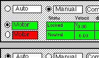
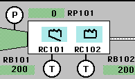

|
| Mihriban Whitmore | Andrea H. Berman | |
| Lockheed Martin | Lockheed Martin | |
| Engineering and Sciences Services | Engineering and Sciences Services | |
| 2400 NASA Road 1, C81 | 2400 NASA Road 1, C81 | |
| Houston, TX 77058-3799 | Houston, TX 77058-3799 | |
| +1 713 483 9725 | +1 713 483 9709 | |
| mihriban.whitmore@spmail.jsc.nasa.gov | andrea.berman@spmail.jsc.nasa.gov |
Human Factors and Ergonomics Laboratory
Frances E. Mount, Manager
NASA Johnson Space Center
IV&V efforts are currently in the early stages. Several existing software metric tools have been identified and researched: 1) the KRI/AG tool, 2) a University of Maryland tool, and 3) CHIMES, a tool developed at NASA Goddard Space Flight Center. Table 1 outlines the advantages, disadvantages, and relevance of each tool to this IV&V effort. KRI/AG is fairly interactive and fully developed, but it only runs on Motif interfaces and verifies highly subjective guidelines [2, 3, 4]. The University of Maryland tool assesses objective characteristics (e.g., button size and labeling, fonts, and colors), but it is still in development and is not yet interactive nor automatic [5, 6]. Computer- Human Interaction Models (CHIMES) is fairly interactive, fully developed, and assesses objective interface characteristics [1]. CHIMES therefore fits the needs of the NASA IV&V process best, and, as NASA-developed software, is easily accessible.
TABLE 1. Advantages and disadvantages of three existing automated IV&V tools
| Software | Advantages | Disadvantages | How well does it meet our IV&V requirements? |
| KRI/AG | - Fairly interactive - Multiple comments on the same topic are aggregated into one comment | - Only runs on Motif interfaces - Attempts to verify highly subjective guidelines, resulting in trivial or irrelevant comments | - Not very well -- the IV&V tool will only verify objective interface characteristics. This tool attempts to cover more ground than is necessary for NASA IV&am;V efforts. |
| Univ. of Maryland tool | - Any type of interface can be translated into the canonical form read by the tool - Assesses consistency of objective interface characteristics such as: fonts, button labeling, and button layout | - Still in development - Not yet interactive or automatic - Currently only checks dialog boxes | - Moderately well -- this tool concentrates on objective interface characteristics and will accept interfaces developed under any system, but it is still in developement. |
| CHIMES | - Fairly interactive - In some instances, CHIMES is able to make the changes that it suggests - Easily accessible | - Only runs on a Sun workstation with SunOS and Motif, under the TAE+ User Interface Management System | - Well -- CHIMES verifies more objective guidelines than KRI/AG and is fully developed already. |
The HFEL's usability testing of CHIMES concentrates on its guidelines-based GUI mode and will help the NASA IV&V team members refine their concept of the future tool and its proposed functionality. If, after usability testing is completed, CHIMES is found to be directly applicable to our needs, it will become the IV&V software tool; otherwise, an in-house tool will be developed based on lessons learned from the CHIMES evaluations.
Formal usability testing is currently underway. Five fairly mature ISS interface designs from five different space station subsystems are being checked. ISS interfaces were selected for their highly complex nature; figure 1 shows excerpts of two of these interfaces. Click on either graphic excerpt to see the entire interface. CHIMES analyzes the conformance of the interfaces' objective HCI characteristics listed above to HCI standards and checks across interfaces for continuity. The time required for the complete analysis is recorded. Four in-house HCI experts then individually perform the same objective analysis on each interface and the continuity check across interfaces, following a formal protocol to ensure that the experts and CHIMES are checking the same objective characteristics. Each expert’s total time is also recorded. Their mean completion time is then compared to the total CHIMES time. The results of each expert’s analysis are also cross- checked with each CHIMES analysis to see where the results match. Preliminary findings show that CHIMES appears to perform the analyses more quickly and reports guideline conformance and discrepancy in as much detail as the experts. Detailed analysis and results will be included in the poster.
|  |  |
On the shuttle side, the Multifunction Electronic Display Subsystem (MEDS) project is redesigning shuttle displays and researching the automation of some ground and crew tasks. This project alone could benefit greatly from a software tool that could check interfaces for continuity; one can see how such a tool could revolutionize interface standardization efforts across the entire shuttle program.
The goal of conformance of space-related critical software displays to human factors and HCI standards is an important one. Such a common ground will indeed provide a unifying framework for future crews of both the space shuttle and ISS. Standardizing interfaces will allow the crews to perform necessary tasks without having to shift mental paradigms between systems. Updates to the software tool will also ensure that new HCI concepts and technologies will always have an opportunity to be incorporated.
2. Lowgren, J., and Lauren, U. Supporting the use of guidelines and style guides in professional user interface design. Interacting With Computers, 5, 4, (1993) 385-396.
3. Lowgren, J., and Nordquist, T. A knowledge-based tool for user interface evaluation and its integration in a UIMS, in Proceedings IFIP INTERACT '90, 395-400.
4. Lowgren, J., and Nordquist, T. Knowledge-based evaluation as design support for graphical user interfaces, in Proceedings of CHI '92, 181-188.
5. Mahajan, R., and Shneiderman, B. (1995). A Family of User Interface Consistency Checking Tools. Technical Report University of Maryland, College Park, CAR-TR-770.
6. Shneiderman, B., Chimera, R., and Jog, N. (1995). Evaluating Spatial and Textual Style of Displays. Technical Report University of Maryland, College Park, CAR-TR-763.
{kind=link}
{kind=link}